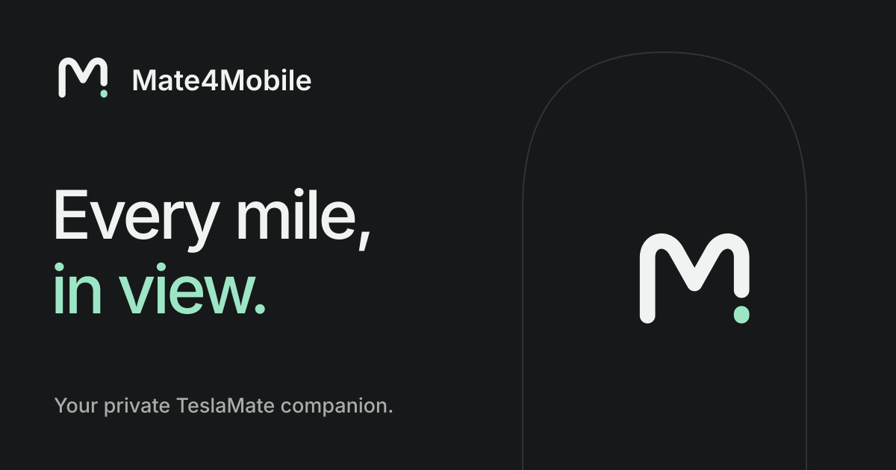

THE IDENTITY / 01
Built for the drive.
Designed for the glance.
Mate4Mobile turns recorded vehicle data into a calm daily companion. Precise, quietly confident and always on the driver’s side.
A mark that follows the journey.
One continuous road forms the M. A mint endpoint signals the next moment, not a command or a status alert. The compact written form is M4M.
Quiet by default. Clear by design.
Inter. Uncomplicated, at every size.
Every mile,
in view.
82% 214 mi 7.4 kW
A little more context. A much clearer picture.
Display 500 · Headings 550–600 · Body 400
16px body text, 14px regular labels. Tabular numbers for telemetry.
At home on your Home Screen.
A full-bleed ink background, with the entire symbol inside the maskable safe zone. Exported for browser tabs, Apple touch icons and Android installation.
A voice that gets to the point.
Say what the reading means.
“Last recorded 12 minutes ago.”
“Costs recorded for 8 of 9 sessions.”
“Building your baseline.”
Give uncertainty a name.
Use “recorded”, “estimated” and “not available” precisely. Never turn missing telemetry into zero, claim battery health from a short sample, or imply the car is live when it is asleep.
Move with purpose.
140ms feedback, 240ms transitions, 420ms entrances. Soft deceleration. Honour reduced motion. Motion explains a change; it doesn’t compete with the data.
Keep room around the mark.
Minimum clear space: one stroke width. Minimum symbol size: 16px. Prefer 24px and above in interfaces. No stretching, decorative gradients or Tesla logos. Use the supplied monochrome master on busy imagery.
Ready to share.
